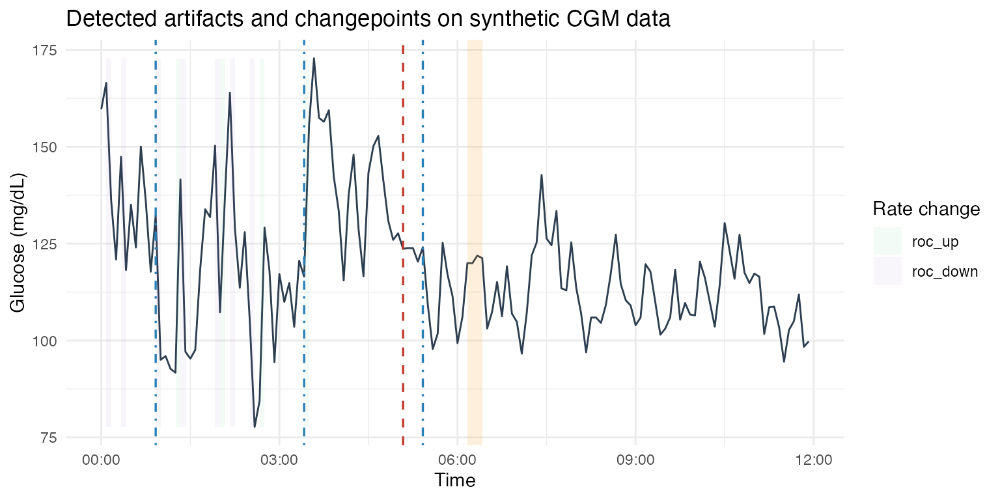

End-to-End Wearable Anomaly Workflow
workflow.RmdIntroduction
wearableAnomaly delivers a batch anomaly-detection
pipeline for single-sensor signals such as continuous glucose monitors
(CGMs). This vignette walks through the tidy workflow: ingesting raw
observations, validating/resampling, running artifact and changepoint
detectors (with Rcpp acceleration enabled by default), merging/scoring
segments, and evaluating precision/recall against labeled episodes.
Getting started
library(wearableAnomaly)
library(dplyr)
#>
#> Attaching package: 'dplyr'
#> The following objects are masked from 'package:stats':
#>
#> filter, lag
#> The following objects are masked from 'package:base':
#>
#> intersect, setdiff, setequal, union
library(ggplot2)
set.seed(20251117)For illustration we generate two synthetic subjects with structured meals and noise:
raw <- toy_cgm(n_id = 2, n = 240, by = "5 min")
glimpse(raw)
#> Rows: 480
#> Columns: 3
#> $ id <chr> "id01", "id01", "id01", "id01", "id01", "id01", "id01", "id01", …
#> $ time <dttm> 2025-01-01 00:00:00, 2025-01-01 00:05:00, 2025-01-01 00:10:00, …
#> $ value <dbl> 107, 112, 107, 120, 114, 109, 116, 118, 118, 114, 123, 118, 114,…Ingest and validate
as_wearable_ts() enforces the
<id, time, value> schema and stores cadence, bounds,
and timezone metadata. validate_ts() reports ordering,
duplicates, and range issues; use has_issues() to gate
downstream processing.
ts <- as_wearable_ts(raw, id = id, time = time, value = value)
issues <- validate_ts(ts)
has_issues(issues)
#> [1] FALSEIf problems exist they are summarized in issues.
Resample and detect artifacts
Irregularly sampled devices can be regularized with
resample_series(). The artifact detectors operate on the
resampled tibble:
ts_5min <- resample_series(ts, by = "5 min", agg = "mean")
flat <- detect_flatlines(ts_5min, tol = 1e-5, min_len = "20 min")
sat <- detect_saturation(ts_5min, min_len = "15 min")
roc <- detect_rate_change(ts_5min, window = "20 min", threshold = 3)Each detector produces tidy episodes (id,
start, end, type,
strength) and can be plotted or exported independently.
Changepoints (Rcpp-accelerated PELT & E-divisive)
detect_changepoints_pelt() and
detect_changepoints_edivisive() automatically select the
Rcpp backend when the shared library is available. You can force the
native path to showcase the accelerated implementation:
old_opts <- options(
wearableAnomaly.use_rcpp = TRUE,
wearableAnomaly.rcpp_threshold = 1L
)
on.exit(options(old_opts), add = TRUE)
pelt <- detect_changepoints_pelt(ts_5min, penalty = "MBIC", min_seg_len = 18)
ediv <- detect_changepoints_edivisive(ts_5min, min_seg_len = 18, R = 99)When packages such as changepoint or
{ecp} are installed you can compare outputs via the
included parity tests (see the Rcpp vignette for details).
Merge and score segments
Artifact detections and changepoints can be unified via
merge_segments(), which standardizes schemas and groups
overlapping episodes. score_anomalies() normalizes
contributions per source and combines them with a configurable rule:
segments <- merge_segments(
flatlines = flat,
saturation = sat,
ratechange = roc,
pelt = pelt,
edivisive = ediv,
gap = "10 min"
)
scored <- score_anomalies(segments, combine = "sum")
scored %>%
select(id, start, end, source, score) %>%
arrange(desc(score)) %>%
head()
#> # A tibble: 6 × 5
#> id start end source score
#> <chr> <dttm> <dttm> <chr> <dbl>
#> 1 id02 2025-01-01 05:15:00 2025-01-01 05:35:00 ratechange|pelt|edivisive 2.09
#> 2 id01 2025-01-01 07:55:00 2025-01-01 07:55:00 pelt|edivisive 1.56
#> 3 id02 2025-01-01 22:10:00 2025-01-01 22:20:00 pelt|edivisive 1.42
#> 4 id02 2025-01-01 13:35:00 2025-01-01 13:35:00 pelt|edivisive 1.37
#> 5 id01 2025-01-01 17:45:00 2025-01-01 17:45:00 pelt|edivisive 1.21
#> 6 id01 2025-01-01 02:20:00 2025-01-01 02:20:00 edivisive 1Episode tables and overlay figure
The snapshot below mirrors the tables used in the final presentation by working with a single subject that includes clear detector hits and changepoints.
set.seed(615)
sim_single <- simulate_cgm_benchmark(
n_series = 1,
n_points = 144,
min_seg_len = 12,
n_cps = 3,
seed = 615
)
series <- sim_single$data
truth <- sim_single$truth
subject <- dplyr::filter(series, id == unique(series$id))
ts_one <- as_wearable_ts(subject, id = id, time = time, value = value)
ts_reg <- resample_series(ts_one, by = "5 min", agg = "mean")
flat_one <- detect_flatlines(ts_reg, min_len = "15 min", tol = 1e-5)
sat_one <- detect_saturation(ts_reg, min_len = "15 min")
roc_one <- detect_rate_change(ts_reg, window = "20 min", threshold = 3)
pelt_one <- detect_changepoints_pelt(ts_reg, penalty = "MBIC", min_seg_len = 12)
ediv_one <- detect_changepoints_edivisive(ts_reg, min_seg_len = 12, R = 99)
knitr::kable(
transmute(flat_one, id, start_time = start, end_time = end,
duration_min = round(as.numeric(end - start, units = "mins"), 1),
value = round(value, 1)),
caption = "Flatline episodes"
)| id | start_time | end_time | duration_min | value |
|---|
knitr::kable(
transmute(sat_one, id, start_time = start, end_time = end,
duration_min = round(as.numeric(end - start, units = "mins"), 1),
type),
caption = "Saturation episodes"
)| id | start_time | end_time | duration_min | type |
|---|
knitr::kable(
transmute(roc_one, id, start_time = start, end_time = end,
type, strength = round(strength, 2)),
caption = "Rate-of-change episodes"
)| id | start_time | end_time | type | strength |
|---|---|---|---|---|
| id001 | 2025-01-01 00:05:00 | 2025-01-01 00:10:00 | roc_down | 3.36 |
| id001 | 2025-01-01 00:20:00 | 2025-01-01 00:25:00 | roc_down | 3.24 |
| id001 | 2025-01-01 00:55:00 | 2025-01-01 01:00:00 | roc_down | 4.14 |
| id001 | 2025-01-01 01:15:00 | 2025-01-01 01:20:00 | roc_up | 5.52 |
| id001 | 2025-01-01 01:20:00 | 2025-01-01 01:25:00 | roc_down | 4.92 |
| id001 | 2025-01-01 01:55:00 | 2025-01-01 02:00:00 | roc_down | 4.77 |
| id001 | 2025-01-01 02:00:00 | 2025-01-01 02:05:00 | roc_up | 3.32 |
| id001 | 2025-01-01 02:10:00 | 2025-01-01 02:15:00 | roc_down | 3.85 |
| id001 | 2025-01-01 02:30:00 | 2025-01-01 02:35:00 | roc_down | 3.06 |
| id001 | 2025-01-01 02:40:00 | 2025-01-01 02:45:00 | roc_up | 4.95 |
| id001 | 2025-01-01 03:25:00 | 2025-01-01 03:30:00 | roc_up | 4.33 |
knitr::kable(
transmute(pelt_one, id, cp_time, new_level = round(new_level, 1),
new_var = round(new_var, 1), penalty),
caption = "PELT changepoints"
)| id | cp_time | new_level | new_var | penalty |
|---|---|---|---|---|
| id001 | 2025-01-01 05:05:00 | 112.6 | 91.7 | MBIC |
knitr::kable(
transmute(ediv_one, id, cp_time, p_value = round(p_value, 3)),
caption = "E-divisive changepoints"
)| id | cp_time | p_value |
|---|---|---|
| id001 | 2025-01-01 00:55:00 | 0.03 |
| id001 | 2025-01-01 03:25:00 | 0.02 |
| id001 | 2025-01-01 05:25:00 | 0.01 |
gg <- ggplot(subject, aes(time, value)) +
geom_line(color = "#2C3E50") +
labs(x = "Time", y = "Glucose (mg/dL)",
title = "Detected artifacts and changepoints on synthetic CGM data") +
theme_minimal()
if (nrow(flat_one) > 0) {
gg <- gg +
geom_rect(data = flat_one,
aes(xmin = start, xmax = end, ymin = -Inf, ymax = Inf),
inherit.aes = FALSE, alpha = 0.15, fill = "#F39C12")
}
if (nrow(sat_one) > 0) {
gg <- gg +
geom_rect(data = sat_one,
aes(xmin = start, xmax = end, ymin = -Inf, ymax = Inf, fill = type),
inherit.aes = FALSE, alpha = 0.1) +
scale_fill_manual(values = c(saturation_high = "#E74C3C", saturation_low = "#3498DB"),
guide = guide_legend(title = "Saturation"))
}
if (nrow(roc_one) > 0) {
gg <- gg +
geom_rect(data = roc_one,
aes(xmin = start, xmax = end, ymin = min(subject$value),
ymax = max(subject$value), fill = type),
inherit.aes = FALSE, alpha = 0.05) +
scale_fill_manual(values = c(roc_up = "#27AE60", roc_down = "#8E44AD"),
guide = guide_legend(title = "Rate change"),
breaks = c("roc_up", "roc_down"))
}
if (nrow(pelt_one) > 0) {
gg <- gg +
geom_vline(data = pelt_one, aes(xintercept = cp_time),
color = "#C0392B", linetype = "dashed", size = 0.6)
}
#> Warning: Using `size` aesthetic for lines was deprecated in ggplot2 3.4.0.
#> ℹ Please use `linewidth` instead.
#> This warning is displayed once every 8 hours.
#> Call `lifecycle::last_lifecycle_warnings()` to see where this warning was
#> generated.
if (nrow(ediv_one) > 0) {
gg <- gg +
geom_vline(data = ediv_one, aes(xintercept = cp_time),
color = "#2980B9", linetype = "dotdash", size = 0.6)
}
gg
Evaluate against labeled truth
The synthetic generator can embed ground-truth events; if you have
human labels for a deployment, evaluate_methods() computes
precision, recall, F1, and IoU with an adjustable tolerance:
metrics <- evaluate_methods(pred = results$segments, truth = labels, tolerance = "10 min")
metricsNext steps
- Add domain-specific bounds (
lower,upper) toas_wearable_ts(). - Experiment with the
"clinical"preset for higher specificity. - Use pkgdown (or Quarto) to embed plots comparing original vs. detected anomalies for stakeholders.